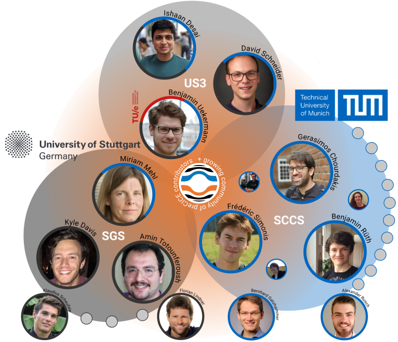

About the preCICE project
Development
preCICE is developed in the groups of Benjamin Uekermann (Usability and Sustainability of Simulation Software) and Miriam Schulte (Simulation of Large Systems) at the University of Stuttgart and in the group of Hans-Joachim Bungartz (Scientific Computing in Computer Science) at the Technical University of Munich. Support contracts are offered through TTI GmbH.

For the full list of contributors to preCICE please see our community page.
The conceptual ideas of preCICE are not completely new. preCICE is an advancement of FSI*ce, developed by Markus Brenk.
Planning and development of precice.org
The website in its current form was planned and implemented by CH Lorenz Research and Innovation Consulting together with the preCICE team. For more information contact Christopher Lorenz at christopher[dot]lorenz[at]chlorenz[dot]ug.
Funding
Cluster of Excellence EXC 2075 SimTech – Data-Integrated Simulation Science under Germany's Excellence Strategy
Funding number: 390740016
Years running: 2024–2025
BMUV (project management agency GRS)
Funding number: 1501593
Years running: 2019–2023
KONWIHR – Competence Network for Scientific HPC in Bavaria
Years running: 2021-2023
SPPEXA – Priority Programme SPP 1648 – Software for Exascale Computing
Funding number: 230798225
Years running: 2012–2020
Prince XML
We use a non-commercial license of Prince XML to generate the PDF version of the documentation. For more information see our meta documentation page.
Website analytics
We use the open-source and privacy-friendly analytics service Plausible. Everyone can see the analytics for this website.
Impressum
This website is maintained by
Benjamin Uekermann - Universität Stuttgart - Universitätsstraße 38 - 70569 Stuttgart
Privacy
You can find the preCICE privacy policy here.
preCICE is tasty because it is made with love by its contributors.